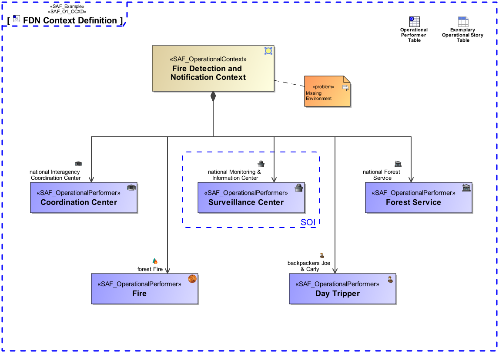

O1_OCXD Operational Context Definition Viewpoint
| Domain | Aspect | Maturity |
|---|---|---|
| Operational | Context & Exchange |

The Operational Context Definition Viewpoint provides the operational contexts and the involved operational performers necessary to support a specific set of operational capabilities.
The Operational Context Definition Viewpoint supports the “Business or Mission Analysis Process” activities of the INCOSE SYSTEMS ENGINEERING HANDBOOK 2023 [§2.3.5.1] and contributes to both the problem or opportunity statement, and the Major Stakeholder Identification.
A block definition diagram (BDD) featuring the identified Operational Performers playing a role in the Operational Context being addressed.
The following Stereotypes / Model Elements are used in the Viewpoint: